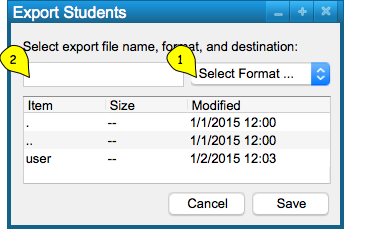
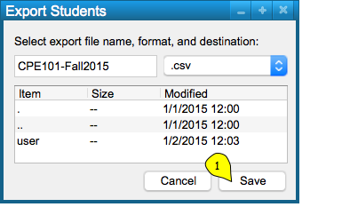

(Content explanation currently under construction ...)
This is shown below, in Figure 1.

Figure 1
(Content explanation currently under construction ...)
This is shown below, in Figure 2.

Figure 2
(Content explanation currently under construction ...)
This process is illustrated below, in Figure 3.
Figure 3
(Content explanation currently under construction ...)